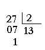
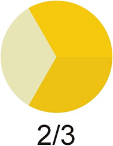
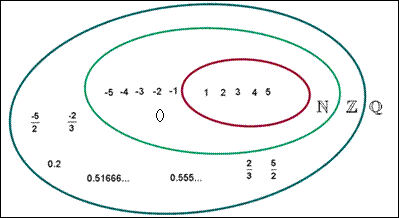

FRACCIONES Y DECIMALES
Números racionales
Hay situaciones en las que los número enteros no son suficientes:
- Cuando una división no es exacta

- Cuando quiero expresar una parte de la unidad

Cuando añadimos las fracciones a los números enteros, obtenemos los números racionales y los denotamos con
Ahora tenemos estos conjuntos de números:
 N- Números naturales Z- Números enteros Q- Números racionales
Pregunta Verdadero-Falso
Decide si las siguientes afirmaciones son verdaderas o falsas:
Retroalimentación
Verdadero
Retroalimentación
Falso
Retroalimentación
Verdadero
Obra publicada con Licencia Creative Commons Reconocimiento No comercial Compartir igual 3.0